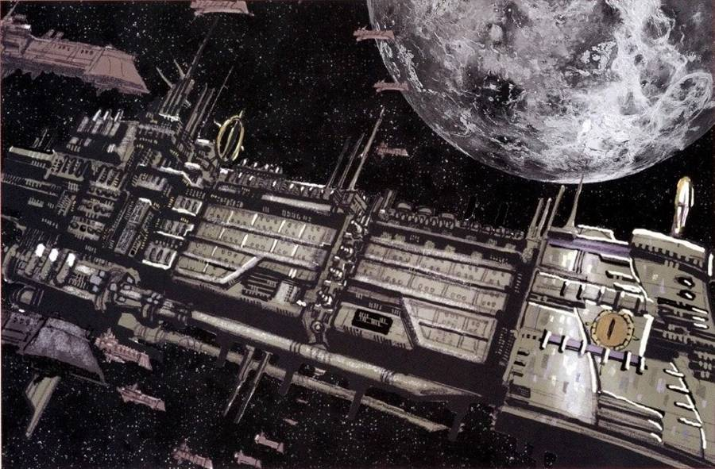

Vengeful Spirit
| Vengeful Spirit | |
|---|---|
 The Vengeful Spirit at anchor during the Great Crusade, the Eye of Horus on her prow Artwork © Games Workshop | |
| History | |
| Builder | The Mechanicum, Mars |
| Launched | c. 798.M30, after the Treaty of Mars (739.M30)[a] |
| Operators | XVI Legion (Luna Wolves, then Sons of Horus); Black Legion |
| Commanders | Horus (Great Crusade – 014.M31); Abaddon the Despoiler (M31 – present) |
| Fleet | 63rd Expeditionary Fleet; later flagship of the Black Fleet |
| Fate | In service with the Black Legion |
| General characteristics | |
| Class | Gloriana-class battleship (modified) |
| Armament | Hundreds of gun turrets; accelerator cannon; lance batteries |
| Command deck | Lupercal's Court |
| Notable actions | Isstvan III; Siege of Terra; Battle of Harmony; Black Crusades (including the Thirteenth) |
The Vengeful Spirit is a Gloriana-class battleship, built at Mars in the first years of the Great Crusade, that served as the flagship of the Warmaster Horus and his XVI Legion, the Luna Wolves, later the Sons of Horus. From her command deck Horus led the Great Crusade after Ullanor, and then the traitor Legions in the Horus Heresy.[1]
In the final hours of the Siege of Terra Horus lowered her shields, and the Emperor of Mankind teleported aboard with his bodyguard and two of his loyal sons. The Emperor destroyed Horus in Lupercal's Court but was himself mortally wounded, and has been kept alive on the Golden Throne since. The crippled ship was abandoned by the loyalists and later recovered by Ezekyle Abaddon, for whom she has served as flagship of the Black Legion ever since.[2][3]
Design
[edit]The Gloriana-class vessels were the largest warships of the Great Crusade, built by the Mechanicum after the Treaty of Mars as flagships for the Emperor and his primarchs. Each combined the firepower of a battleship with the capacity to carry a large part of a Legion. The Vengeful Spirit was built to a variant of the Scylla pattern.[4]
Contemporary accounts describe her as "a heavy ingot of iron", lined with hundreds of turrets and accelerator cannon longer than most battleships. Her prow bore a great golden ring around a narrow ellipse, the eye of the Warmaster. The Strategium, later rebuilt as the throne room called Lupercal's Court, was the command centre of the 63rd Expeditionary Fleet and of the thousands of Imperial personnel who lived and worked aboard.[5]
Because she was among the first ships built for the Imperium, the ship's core was old and largely abandoned. It was a labyrinth of disused decks where crew rarely went, and in those spaces the warrior lodges of the Legion met.[5]
Great Crusade
[edit]The Vengeful Spirit carried Horus through the Great Crusade, including the campaigns of the 63rd Expedition recorded by the remembrancers Kyril Sindermann and Mersadie Oliton. After Horus was named Warmaster at Ullanor, the ship became the seat of command of the whole Crusade.[5]
Aboard the ship the Warmaster kept the Mournival, the council of four captains who advised him, among them Ezekyle Abaddon and Garviel Loken. The remembrancers lived and worked on her decks, and Sindermann's accounts describe the Strategium as a place of open debate where Horus heard his officers and his chroniclers alike. Those accounts are now valued by Imperial historians as the fullest record of the Warmaster's court before his fall.[5]
The Word Bearers chaplain Erebus used the empty depths of the ship to hide the Kinebrach Anathame, which he had stolen from the Interex, before it was used to wound Horus on Davin. In the same depths Erebus later held the rites by which Horus spoke with the Ruinous Powers.[5]
Horus Heresy
[edit]After Isstvan III the ship became less a warship than a temple to the gods Horus now served. Loyalists aboard were purged. Garviel Loken was sent to his intended death on Isstvan III, and the remembrancers were hunted down or fled; a few escaped with the loyalist Death Guard captain Nathaniel Garro aboard the frigate Eisenstein, which carried the first warning of the rebellion to Terra. The lodges' meeting rooms in the ship's depths became shrines, and sacrifices were made there to the powers of the warp.[1]
The ship took part in the Drop Site Massacre and in the campaigns of the Sons of Horus that followed, among them the invasion of Molech, where Horus sought a way into the warp.[1]
Siege of Terra
[edit]The Vengeful Spirit opened the bombardment of Terra with a single shell aimed at the Sanctum Imperialis. Through the Siege she stayed in orbit as Horus's throne and fortress.[2]
In the last days, Horus ordered her shields lowered entirely. The Emperor teleported aboard with Rogal Dorn, Sanguinius and the Custodes of Constantin Valdor. The interior of the ship, saturated with warp power, merged with the Palace into what survivors called the Inevitable City, and the loyalists were scattered through it. Horus turned the ship itself against the invaders. The Blood Angels crippled her, Sanguinius was killed by Horus, and the Emperor destroyed Horus in Lupercal's Court, purging the ship and Terra of the warp's corruption in the process.[2]
As reality was restored, Terra and the ship were forced apart. Dorn and Valdor found the Emperor alive in Lupercal's Court and carried him back to the Palace with the body of Sanguinius. Valdor ordered that Horus's corpse be left aboard, expecting the ship to be destroyed.[2]
After the Heresy
[edit]The ship was not destroyed. With most of her mortal crew dead or insane, the surviving Sons of Horus made the repairs themselves. Abaddon gathered the Legion's survivors aboard, took up Horus's Talon and assumed command of the Legion. The Vengeful Spirit carried them in their retreat from Terra.[2]
In the Eye of Terror the Sons of Horus suffered heavily in the Legion Wars, and the fortress of Maleum fell. The Vengeful Spirit, altered by long exposure to the warp, became embedded beneath Asa'ciaral, a dead Aeldari world in the Eye, and Abaddon withdrew from command. An expedition led by Falkus Kibre and the sorcerer Iskandar Khayon found both. Abaddon agreed to lead the Legion again, and used the ship to destroy the Emperor's Children on the daemon world of Harmony, together with the clone of Horus they had grown there.[3]
After the Battle of Harmony Abaddon renamed his warriors the Black Legion and took the title of Warmaster of Chaos. The Vengeful Spirit became the heart of the Black Fleet.[3]

Black Crusades
[edit]Under Abaddon the ship has been rebuilt many times with the aid of the Dark Mechanicum, and Navy observers describe her hull as warped and darkened by the Eye. Her armament has grown, and her decks hold a standing garrison of the Black Legion's chosen warriors. Lupercal's Court remains her command deck, where Abaddon is reported to hold council with the lords who follow him.[4]
The ship has appeared in realspace during several of Abaddon's Black Crusades, including the Tenth, the Twelfth and the Thirteenth. During the Thirteenth, in 999.M41, she fought Imperial fleets in the Cadian system before the Fall of Cadia.[4]
Nearly all the other Gloriana-class ships were lost during the Heresy or soon after. Among those still known to exist are the Black Legion's Harbinger of Doom and the World Eaters' Conqueror. The Imperial Navy rates the Vengeful Spirit as the most powerful capital ship of the Black Legion.[4]
Legacy
[edit]The Vengeful Spirit holds a unique place in Imperial history as the site of the Emperor's last battle. To the Imperial Cult the ship is accursed, and to the Black Legion she is a relic of Horus and a symbol of Abaddon's claim to his inheritance.[3]
Timeline
[edit]| Date | Event |
|---|---|
| 739.M30 | The Treaty of Mars; the Mechanicum agrees to build the fleets of the Great Crusade. |
| c. 798.M30 | The Vengeful Spirit is completed at Mars as a Gloriana-class flagship.[b] |
| 801.M30 | Horus is found and takes command of the Luna Wolves and their flagship. |
| 000.M31 | Horus is named Warmaster at Ullanor; the ship becomes the seat of command of the Crusade. |
| 001–003.M31 | The campaigns of the 63rd Expedition, recorded by Kyril Sindermann and Mersadie Oliton. |
| 003.M31 | Erebus hides the Kinebrach Anathame, stolen from the Interex, in the ship's depths. |
| 004.M31 | Horus is wounded on Davin; rites in the ship's lodges follow his fall. |
| 005.M31 | Loyalists aboard are purged before Isstvan III; remembrancers flee with the Eisenstein. |
| 006.M31 | The ship takes part in the Drop Site Massacre. |
| 009.M31 | The invasion of Molech; Garviel Loken's Knights-Errant infiltrate the ship. |
| 014.M31 | The ship opens the bombardment of Terra in the Siege of Terra. |
| 014.M31 | The Emperor boards with Rogal Dorn, Sanguinius and Constantin Valdor; Horus is destroyed in Lupercal's Court. |
| 014.M31 | Abaddon takes command and carries the Sons of Horus to the Eye of Terror. |
| M31 | The Sons of Horus are broken in the Legion Wars; the ship is lost beneath Asa'ciaral. |
| Before 781.M31 | Abaddon recovers the ship and founds the Black Legion; she becomes the heart of the Black Fleet. |
| 999.M41 | The ship fights in the Cadian system during the Thirteenth Black Crusade. |
See also
[edit]Notes
[edit]References
[edit]- ^ a b c McNeill, Graham. False Gods (novel). Black Library. Counter, Ben. Galaxy In Flames (novel). Black Library.
- ^ a b c d e Abnett, Dan. Horus Rising (novel). Black Library. McNeill, Graham. Vengeful Spirit (novel). Black Library.
- ^ a b c d Dembski-Bowden, Aaron. Soul Hunter (novel). Black Library. Dembski-Bowden, Aaron. The Talon of Horus (novel). Black Library.
- ^ a b c d Black Legion - A Codex: Chaos Space Marines Supplement (6th Edition), "The Conflict of Helica", pp. 39-40. Games Workshop. Battlefleet Gothic 2010 Compendium, pp. 111-112.
- ^ a b c d e Horus Heresy: Collected Visions (Art Book). The 13th Black Crusade (Background Book).